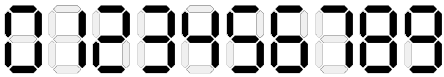
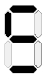
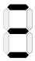
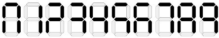
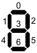

| The Broken Pedometer |
A marathon runner uses a pedometer with which he is having problems. In the pedometer the symbols are represented by seven segments (or LEDs):
But the pedometer does not work properly (possibly the sweat affected the batteries) and only some of the LEDs are active. The runner wants to know if all the possible symbols:

can be correctly identified. For example, when the active LEDs are:

numbers 2 and 3 are seen as:

so they cannot be distinguished. But when the active LEDs are:
the numbers are seen as:

and all of them have a different representation.
Because the runner teaches algorithms at University, and he has some hours to think while he is running, he has thought up a programming problem which generalizes the problem of his sweat pedometer. The problem consists of obtaining the minimum number of active LEDs necessary to identify each one of the symbols, given a number P of LEDs, and N symbols to be represented with these LEDs (along with the codification of each symbol).
For example, in the previous sample P = 7 and N = 10. Supposing the LEDs are numbered as:

The codification of the symbols is: "0" = 1 1 1 0 1 1 1; "1" = 0 0 1 0 0 1 0; "2" = 1 0 1 1 1 0 1; "3" = 1 0 1 1 0 1 1; "4" = 0 1 1 1 0 1 0; "5" = 1 1 0 1 0 1 1; "6" = 1 1 0 1 1 1 1; "7" = 1 0 1 0 0 1 1; "8" = 1 1 1 1 1 1 1; "9" = 1 1 1 1 0 1 1. In this case, LEDs 5 and 6 can be suppressed without losing information, so the solution is 5.
The input file consists of a first line with the number of problems to solve. Each problem consists of a first line with the number of LEDs (P), a second line with the number of symbols (N), and N lines each one with the codification of a symbol. For each symbol, the codification is a succession of 0s and 1s, with a space between them. A 1 means the corresponding LED is part of the codification of the symbol. The maximum value of P is 15 and the maximum value of N is 100. All the symbols have different codifications.
The output will consist of a line for each problem, with the minimum number of active LEDs necessary to identify all the given symbols.
2 7 10 1 1 1 0 1 1 1 0 0 1 0 0 1 0 1 0 1 1 1 0 1 1 0 1 1 0 1 1 0 1 1 1 0 1 0 1 1 0 1 0 1 1 1 1 0 1 1 1 1 1 0 1 0 0 1 0 1 1 1 1 1 1 1 1 1 1 1 0 1 1 6 10 0 1 1 1 0 0 1 0 0 0 0 0 1 0 1 0 0 0 1 1 0 0 0 0 1 1 0 1 0 0 1 0 0 1 0 0 1 1 1 0 0 0 1 1 1 1 0 0 1 0 1 1 0 0 0 1 1 0 0 0
5 4